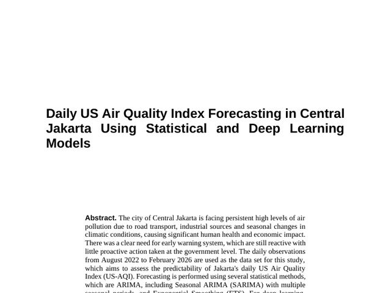
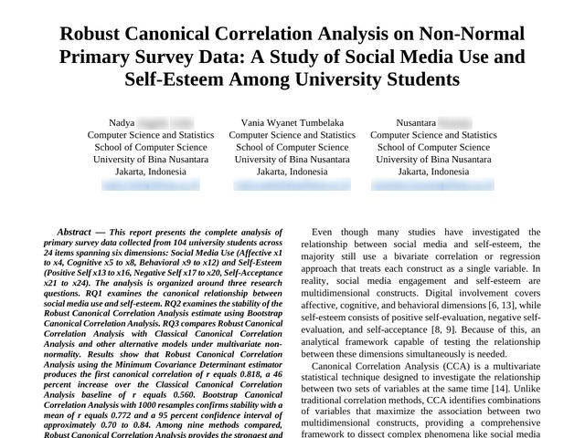
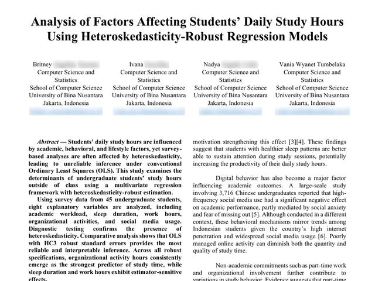
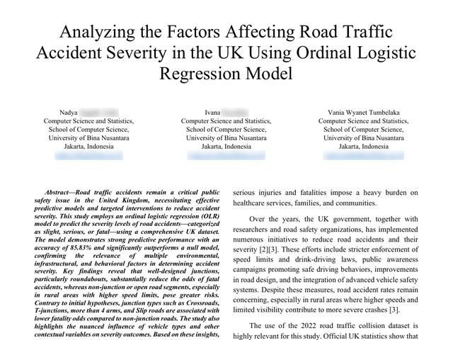
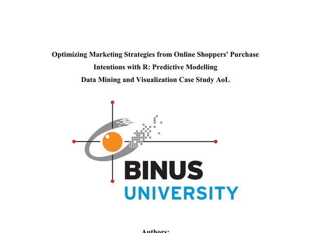

Research papers

PDF · Time-series forecastingForecasting Jakarta's Daily Air Quality
ARIMA, SARIMA and ETS against LSTM and GRU on 1,282 daily observations. LSTM cut test RMSE by 39.2% against the best statistical model.

PDF · Multivariate statisticsRobust Canonical Correlation: Social Media Use and Self-Esteem
Survey of 104 students. Robust CCA found a first canonical correlation of 0.818 against 0.560 for the classical method.

PDF · Regression analysisHeteroskedasticity-Robust Regression on Students' Study Hours
Survey of 45 undergraduates. OLS with HC3 standard errors was the most dependable estimator, and organisation hours was the strongest predictor.

PDF · Categorical data analysisRoad Accident Severity in the UK
Ordinal logistic regression on 2022 collision data. 85.83% accuracy, and roundabouts lowered the odds of a fatal outcome.
 PDF · Machine learning
PDF · Machine learning
Machine Learning for Maternal Health Risk Prediction
Group paper (Computational Biology) comparing nine classifiers on a public maternal health risk dataset, with exploratory analysis of blood pressure, blood sugar and class imbalance. Tree-based ensembles performed best.

PDF · Data mining and visualizationPredicting Online Shoppers' Purchase Intention in R
Exploratory analysis and six classifiers (decision tree, random forest, SVM, naive Bayes, KNN, logistic regression) on 12,330 shopping sessions, with business recommendations. Random forest was the most accurate at 90.4%.
Machine learning
-
Group project · Machine learning
Student Depression Prediction
Group machine learning project (Group 7, class LA06) built on the public Student Depression dataset from Kaggle. Delivered as a Colab notebook and a Canva poster.
Design and web projects
-
GitHub · Laravel web app
NyarisBaru
A Laravel marketplace for second-hand goods with a Trusted Seller badge, forum, wishlist and escrow-style payment, built from a survey of 21 users.
-
Figma · Requirements engineering
Pawfect
An all-in-one pet care platform that grew from 3–4 planned modules to 12. A case study of scope creep, using UML and a Figma prototype.
 Figma · Human-computer interaction
Figma · Human-computer interaction
JCI Drone Store
A drone store designed in Figma, then built as a multi-page website in HTML, CSS and JavaScript.
 Documentation + Figma + GitHub · Linear algebra
Documentation + Figma + GitHub · Linear algebra
Matrix Calculator
A web app for linear algebra: diagonalization, LU decomposition (Crout's method), the power method and SVD. Client-server design with a FastAPI backend in a router, schema and service structure, using NumPy. The documentation covers usage, edge cases and checks against hand calculations.